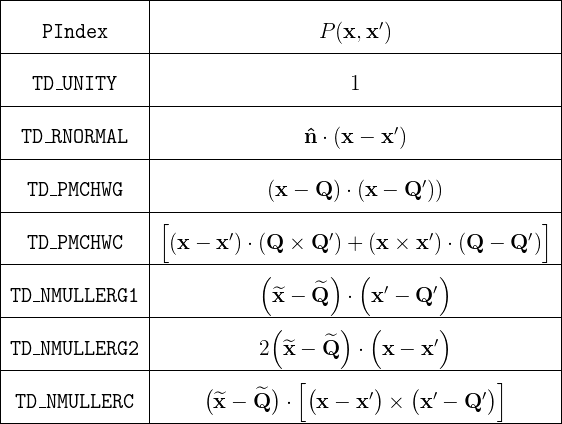
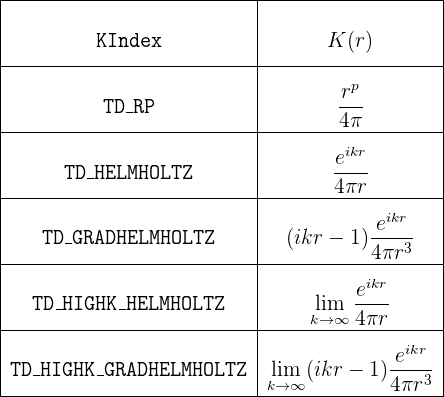

Computation of Singular Integrals in scuff-em
A key feature of scuff-em is an accurate and efficient code for computing singular four-dimensional integrals over pairs of triangles. The algorithm that scuff-em uses for this purpose---which I call the "generalized Taylor-Duffy method" in honor of the progenitors of some earlier methods that inspired it---is discussed in detail in this paper:
-
``Generalized Taylor–Duffy Method for Efficient Evaluation of Galerkin Integrals in Boundary-Element Method Computations'', IEEE Transactions on Antennas and Propagation 63 195 (2015).
ArXiV: http://arxiv.org/abs/1312.1703.
The code that evaluates singular integrals is packaged
with the scuff-em distribution;
it is contained in a single C++ file named
TaylorDuffy.cc (around 1,500 lines).
This code calls the pcubature code from
Steven G. Johnson's numerical cubature package.
This page is intended for developers who would like to use the scuff-em implementation of the generalized Taylor-Duffy method in their own codes.
1. What the code actually computes
The code provides a C++ function named TaylorDuffy
which computes the following four-dimensional integral over a triangle-product
domain:
In this expression,
-
and are
triangles with at least one common vertex.
(You supply to
TaylorDuffythe cartesian coordinates of the triangle vertices.)
- P is a polynomial function of 6 variables (the Cartesian
components of x,x'). Although the underlying algorithm works
for arbitrary polynomials P, in the implementation of
TaylorDuffyprovided below you will select one of a predetermined set of possible polynomials (see below). Modifying the code to support other polynomials would be a relatively straightforward, if tedious, task.
- K is a kernel function of a single scalar variable
r. Although the algorithm works for a fairly wide family of
kernel functions, in the implementation of
TaylorDuffyprovided below you will select one of a predetermined set of possible kernels (see below). Again, it should be relatively straightforward to modify the code to support other kernels.
Actually, it is more accurate to say that TaylorDuffy
computes multiple simultaneous integrals of the form (1);
in a single call to TaylorDuffy you can specify, for
the same triangle pair T,T', more than one
(polynomial, kernel) pair, i.e.
{Pn, Kn}
for n=1,2,...,N, and
TaylorDuffy will compute all N integrals at once.
This is faster than making N separate calls due to the
reuse of computational overhead.
2. C++ calling convention
The TaylorDuffy routine has many input
arguments (many of which may be set to default values)
and multiple output values. For this reason, instead
of the typical calling convention in which you specify
multiple input arguments to a C++ function
and get back a single output value,
TaylorDuffy accepts as its argument a
(pointer to a) single big argument structure.
Thus, within a C/C++ program,
to evaluate one or more integrals of the form (1) for a given
pair of triangles you will
-
instantiate and initialize a data structure of type
TaylorDuffyArgStruct, which stores all input and output arguments, and then -
simply call
TaylorDuffy()with a pointer to your argument structure as the only parameter. On return, the results (the values of the integral) will be stored in the argument structure.
The process looks like this:
// instantiate and initialize argument structure
TaylorDuffyArgStruct MyTDArgs, *TDArgs=&MyTDArgs;
InitTaylorDuffyArgs(TDArgs); // always call this!
// fill in necessary fields
TDArgs->WhichCase = TD_COMMONVERTEX
TDArgs->NumPKs = 1;
...
// evaluate the integral
TaylorDuffy(TDArgs);
// results are now available inside TDArgs
printf("Result: %e \n", real(TDArgs->Result[0]) );
Thread Safety
TaylorDuffy() is thread-safe; you may call it
from multiple simultaneously-executing threads without fear
of crosstalk or race conditions. (Indeed,
scuff-em does just this if compiled
with support for openmp
or pthreads.)
Fields in TaylorDuffyArgStruct
The table below details all fields in the argument structure
passed to TaylorDuffy.
In general, you should always call InitTaylorDuffyArgs
first to set all optional fields to default values, then fill in
your desired values for mandatory fields (and overwrite the default
values for any optional fields you wish to tweak).
| Field | Description | ||||
|---|---|---|---|---|---|
| Mandatory input fields describing the triangles | |||||
int WhichCase; |
Counts the number of common vertices between the
two triangles. You should set this to 1, 2, or 3
for the common-vertex, common-edge, or common-triangle
cases. (The file TaylorDuffy.h defines
the constants
TD_COMMONVERTEX=1,
TD_COMMONEDGE=2,
TD_COMMONTRIANGLE=3).
|
||||
|
Pointers to caller-allocated arrays of length 3
containing the x,y,z coordinates of the
triangle vertices.
|
||||
| Mandatory input fields describing the P and K functions | |||||
|
|
||||
| Input fields that are required for certain P functions | |||||
double *Q, *QP;
|
Pointers to caller-allocated arrays of length 3
containing the x,y,z coordinates of the
RWG source/sink vertices Q,Q'. These are
only referenced if any entry in the PIndex
array corresponds to one of the polynomials in the
table below whose definition involves Q,Q'.
|
||||
double *nHat;
|
Pointers to caller-allocated arrays of length 3
containing the x,y,z components of the
unit normal vector n. This is only referenced
if any entry in the PIndex array
corresponds to one of the polynomials in the
table below whose definition involves n.
|
||||
| Optional input fields controlling integration behavior | |||||
double AbsTol, RelTol;
|
The absolute and relative error tolerances to which
the adaptive integrator will attempt to compute
the integral. (The defaults are AbsTol=0.0
and RelTol=1.0e-10.)
|
||||
int MaxEval;
|
An upper bound on the number of function samples
the adaptive integrator may compute. (The default
is MaxEval=1000.) Reducing this
number will cause the code to run more quickly,
possibly at the expense of lower accuracy.
|
||||
| Output fields | |||||
cdouble *Result, *Error;
|
Pointers to caller-allocated output buffers
with enough space to store NumPKs
values of type cdouble. On return,
Result[n] is the value of the
integral for the nth P,K pairing,
and Error[n] is an estimate of
the error incurred by the numerical quadrature.
|
||||
int nCalls;
|
The number of function evaluations used to evaluate
the numerical cubature.
This number will not exceed MaxEval.
|
||||
Values of the PIndex field
The implementation of TaylorDuffy provided here
contains support for the following choices of the P
polynomial in equation (1). (The values of the PIndex
field here are constants defined in TaylorDuffy.h.)

In this table, the quantities Q, Q', n are vector-valued
parameters that you specify by setting fields in the argument
structure for the TaylorDuffy routine (see above).
Also, in the final three table entries, the tilde symbol above
a vector-valued quantity indicates the result of crossing that
quantity with the normal vector you specify via the nHat
field in the argument structure (see above):
For RWG basis-function enthusiasts, note that the last 5 entries in the table are appropriate for computing matrix elements of the EFIE and MFIE operators between RWG basis functions, but observe carefully that the prefactor in the definition (1) is only part of the full prefactor that arises for RWG basis functions; there is also a factor ll' (product of edge lengths) which is missing from these calculations, and you must put that in yourself, by hand.
Values of the KIndex field
The implementation of TaylorDuffy provided here
contains support for the following choices of the K
kernel in equation (1). (The values of the KIndex
field here are constants defined in TaylorDuffy.h.)

In this table, the values of the parameters p and
k are what you put into the KParam
array in the TaylorDuffyArgStruct.
3. Simple demonstration program
Here is a little test program that you can download and compile against the scuff-em core library to test the code:
Sample output:
% TestTaylorDuffy
Integrand sampled at 33 points.
Integral 1: +3.56771698e-01 (estimated error: 6.0e-12)
Integral 2: +1.57003236e-03 (estimated error: 1.2e-11)
Computation time: 1.209307e+02 microseconds
Here is a listing of the program:
#include "TaylorDuffy.h"
using namespace scuff;
int main(int argc, char *argv[])
{
/* panel vertices */
int WhichCase = 2; // 2 common vertices
double V1[3] = { 0.0, 0.0, 0.0 };
double V2[3] = { 0.1, 0.0, 0.0 };
double V3[3] = { 0.05, 0.1, 0.0 };
double V3P[3] = { 0.07, -0.08, 0.03 };
double *Q = V3; // source/sink vertex, triangle 1
double *QP = V3P; // source/sink vertex, triangle 2
/* specification of which integrals we want */
int NumPKs = 2;
int PIndex[2] = {TD_UNITY, TD_PMCHWC};
int KIndex[2] = {TD_RP, TD_RP};
cdouble KParam[2] = {-1.0, -3.0};
/* output buffers */
cdouble Result[2], Error[2];
/* fill in argument structure with problem description */
TaylorDuffyArgStruct MyTDArgs, *TDArgs=&MyTDArgs;
InitTaylorDuffyArgs(TDArgs);
TDArgs->WhichCase = WhichCase;
TDArgs->V1 = V1;
TDArgs->V2 = V2;
TDArgs->V3 = V3;
TDArgs->V3P = V3P;
TDArgs->Q = Q;
TDArgs->QP = QP;
TDArgs->NumPKs = NumPKs;
TDArgs->PIndex = PIndex;
TDArgs->KIndex = KIndex;
TDArgs->KParam = KParam;
TDArgs->Result = Result;
TDArgs->Error = Error;
/* specify desired error tolerance */
TDArgs->RelTol = 1.0e-10; // request 10-digit accuracy
TDArgs->MaxEval = 25; // upper limit on integrand samples
/* calculate the integral */
TaylorDuffy( TDArgs );
/* print the results */
printf("Integrand sampled at %i points.\n",TDArgs->nCalls);
printf("Integral 1: {%+.8e, %+.8e} (estimated error {%.1e.,%.1e}) \n",
real(Result[0]),imag(Result[0]),real(Error[0]),imag(Error[0]));
printf("Integral 2: {%+.8e, %+.8e} (estimated error {%.1e.,%.1e}) \n",
real(Result[1]),imag(Result[1]),real(Error[1]),imag(Error[1]));
/* uncomment the following line to report computation time */
//#define MEASURE_RUNTIME
#ifdef MEASURE_RUNTIME
#define REPETITIONS 100
Tic();
for(int n=0; n<REPETITIONS; n++)
TaylorDuffy( TDArgs );
double TimeElapsed = Toc() / REPETITIONS;
printf("Computation time: %e microseconds\n",1.0e6*TimeElapsed);
#endif
}
And here is a simple Makefile
that compiles and links against the scuff-em installation
on your system (you'll need to modify a few lines at the top
of this file appropriately for your system):
# top of SCUFF-EM src tree
SCUFF_SRC=$(HOME)/work/scuff-em
# SCUFF-EM installation prefix (set with --prefix when running configure)
SCUFF_INSTALL=$(HOME)/work/scuff-em-installation
# HDF5 / Lapack libraries
HDF5_LIBS=-lhdf5_hl -lhdf5
MATH_LIBS=-lopenblas -lgomp -lgfortran -lpthread
##################################################
# shouldn't need to modify the rest
##################################################
CPPFLAGS+=-I$(SCUFF_SRC)/src/libs/libscuff
CPPFLAGS+=-I$(SCUFF_INSTALL)/include/scuff-em
LIBDIR=$(SCUFF_INSTALL)/lib
LDFLAGS+=-L$(LIBDIR) -Wl,-rpath,$(LIBDIR)
SCUFF_LIBS=-lscuff
LIBS=$(SCUFF_LIBS) $(HDF5_LIBS) $(MATH_LIBS)
TestTaylorDuffy: TestTaylorDuffy.o
$(CXX) $(LDFLAGS) -o $@ $^ $(LIBS)